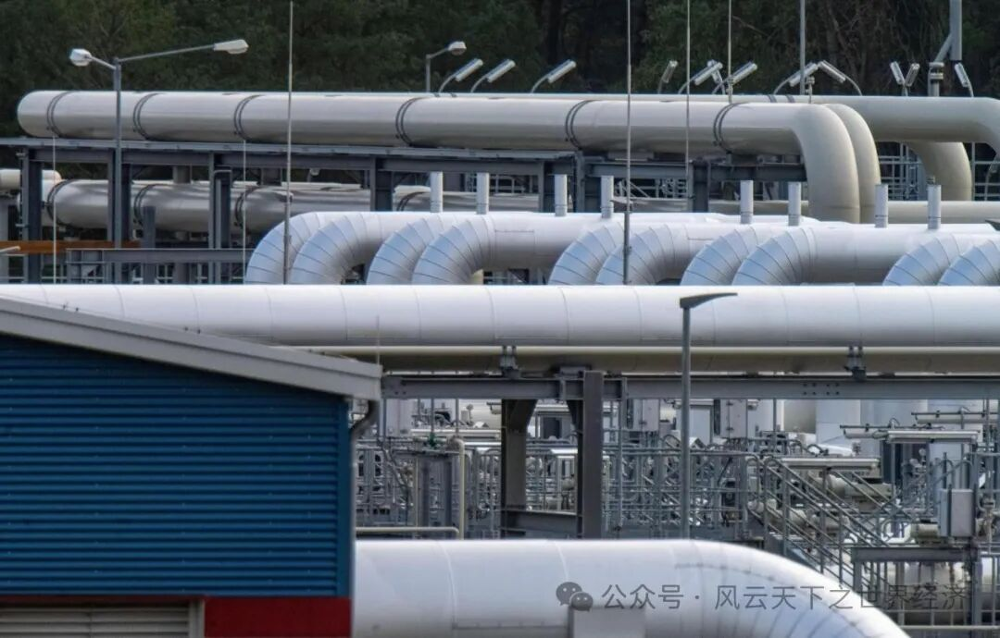

我们用Title/Date/Event/Insight/Voices/Observer来还原此时此刻的世界经济

以色列新版谢克尔纸币和硬币
- Title 加息，以色列通货膨胀的救命稻草？ - Date 2024年2月20日
- Event
以色列央行宣布将贷款基准利率上调0.5个百分点至4.25%，这是2008年以来的最高水平，也是以色列连续第八次加息。该举措引起了以色列外交部长的谴责，他呼吁政府停止加息。以色列总理内塔尼亚胡表示，他无意搅乱以色列中央银行的独立性。
- Insights
2022年以色列的通货膨胀率为5.3%，高于2021年的2.8%，是自2002年6.5%以来的最高水平。2023年初，尽管已经进行了多轮加息，以色列的通胀率仍居高不下。住房、食品、交通和电信价格的持续上涨是导致以色列通胀高企的主要原因，由高成本带来的通货膨胀进一步加重了居民的生活负担。
提高贷款基准利率来减低货币的流动性，从而降低通货膨胀水平的经济逻辑简短易懂，也正因此被以色列领导人奉为圭臬。2022年4月，以色列开启了第一轮加息，将基准利率由0.1%上调至0.35%，但加息以降通膨的美妙咒语没有如期应验，这次“蜻蜓点水”的试探性尝试效果不佳被归因于“浅尝辄止”，于是以色列在加息之途上高歌猛进。
面对来势汹汹的通货膨胀与其带来的高生活成本，加息成为总理内塔尼亚胡紧纂在手心的救命稻草。这位正在推进司法改革，聚拢控制权的总理似乎有这样的经济信仰：当利率提高到一定水平时，问题必能迎刃而解。只是“稻草”尚未“救命”，加息带来的高借贷成本已经让借款人和融资企业颇有怨言。经济学家们也对激进的紧缩货币政策可能导致以色列经济表现萎靡表达了担忧。
加息这根救命稻草似乎略显单薄脆弱，完全依靠货币政策来解决成本型通货膨胀更像是路径依赖的无奈之举。下一次的经济会议，究竟会迎来通胀得到缓解的佳音还是会宣布又一次的持续加息？
- Voice
Leumi银行首席经济学家吉尔·布夫曼(Gil Bufman)在当月CPI数据公布前的一份报告中写道：“这些是价格的一次性变化，而不是持续性的变化。我们认为，在未来两个月内，过去12个月的实际通胀率预计将继续在5%左右，然后开始下降。”
曾在上届政府中担任财政部长的Yisrael Beytenu党Avigdor Liberman喊话现任财政部长Smotrich下台，因为他认为经济数据比预期更糟。“这是你忽视和贬低金融行业官员的结果。”他斥责道。
惠誉评级(Fitch Ratings)将以色列的A+信用评级展望定为稳定，但警告称：“如果以色列政府进一步推进其司法改革的部分工作，将会产生负面影响。”

欧洲天然气运输管道
- Title 欧洲能源危机阴霾或散，暖冬带来短暂佳音 - Date 2024年2月27日
- Event
欧洲天然气期货基准价格18个月来首次跌破每兆瓦时50欧元(53美元)，创2021年8月后的新低水平。碳交易市场反掀涨势。
- Insights
去年八月，受俄乌冲突影响，欧洲天然气的期货价格涨至最高峰值每兆瓦时350欧元。然而27日公布的数据显示，这一价格在冬末的2月底狂跌超80%到50欧元以下。
伴随即将到来的春天的，还有属于欧洲的佳音：能源危机的阴霾似乎即将散去。
俄罗斯对欧洲的能源反制没有取得如期的成效，这个反常温暖的冬天为欧洲一侧的天平添加了决定性的筹码。于此同时，欧洲在节省能源消耗上的努力以及美国从卡塔尔输入的液化天然气也是本次天然气价格下跌的原因。为了应对这个严肃的冬天，据路透社数据显示，欧盟共计拨款6810亿欧元，付出了巨大的成本，但最后结果可观：目前欧盟的储气量已经达到65%，远高于五年同期的平均水平。
下跌的天然气价格也为欧洲工业生产注入活力，欧盟碳交易市场的许可价格首次达到每吨100欧元(107美元)。排污权的价格今年上涨了五分之一。
一切似乎都在显示，欧洲已经走出了困境。但也有人保持谨慎与忧虑：天然气价格的下跌可能是有限度的，下跌刺激欧洲工业部门的生产上升以及来自亚洲的需求竞争都会助推天然气价格再次上涨。
无论如何，欧洲至少成功渡过了这个冬天，挺过了“能源不能没有俄罗斯”的魔咒。暖冬送来短暂佳音之后，欧盟将“政治战略转型”还是“能源产业转型”？世界的格局又一次风起云涌。
- Voice
盛宝银行商品策略主管Ole Hansen在评论价格下滑时表示：“欧盟天然气期货交易18个月来首次低于50欧元/兆瓦时，同样重要的是，2023/2024和2024/2025的冬季也在继续疲软，两个交易都低于60欧元。”
经纪公司Tullet Prebon的亚洲液化天然气主管Tobias Davis表示:“（亚洲）市场吸收了远东市场出现的部分需求，而欧洲仍保持反常的温暖、多风和充足的供应，以满足日益放缓的需求状况。”。
一周工作四天项目的宣传海报
- Title 如果一周只要工作四天，我们会更好吗 - Date 2024年2月22日
- Event
英国公布了其于2022年6月6日开始进行的为期六个月的试验，测试了每周工作四天的可行性，结果显示雇主和员工都对此感到满意；大多数参与试验的公司表示他们将继续采用四天工作制。
- Insights
如果一周只要工作四天还不降低工资，我们会更好吗？
英国拥有共计3300多名员工的70家企业于2022年6月6日起切切实实进行了这样一场为期6个月的试验，以测试是否可以在不造成相应生产力损失的情况下采用四天工作制。这是英国同类试验中规模最大的一次，试验结果由剑桥大学和牛津大学的研究员共同监测，并在今年2月底进行了公开。
结果显示：71%的工人报告称疲劳感降低，病假减少了65%，而公司收入几乎没有变化。公司会议，似乎仅仅是为了填满五天工作周，被“缩短或完全取消”。
事实上，四天工作制并不仅仅只出现在英国。冰岛和日本就是缩减工作时长的知名案例。目前，冰岛已有86%的员工每周工作35小时，如今正在酝酿迈向下一步——每周工作32小时，即每周四天工作制。2019年8月，微软日本办公室试行每周四天工作制且不减薪，2300名员工连续5个周五放假。随后，松下公司也加入其中，以吸引和留住人才。
以上事实都在向我们表明：更短的工作时间加更高的工作效率会带来更好的结果，这给管理学带来启发。但经济学总让我们时时持有审慎与忧虑：
参与试验的70家英国公司涉及银行、酒店、护理、动画等多个行业，但多数为第三产业。对于位于产业链低端和中端、缺乏核心技术和品牌优势、需要靠延长工时来提高产量降低成本的企业而言，四天工作制似乎负担过高而距离遥远，全面推行容易造成不平等的进一步扩大。此外，推行四天工作制对社会保障体系也提出了极高的要求。
一周只工作四天是乍听令人欣喜的糖果，需要在长远中被经济学和现实反复斟酌与检验。
- Voice
4 Day Week Global首席执行官乔•奥康纳（Joe O'Connor）表示：“越来越多的公司已经认识到，“竞争的新领域是生活质量，而缩短工作时间、聚焦产出的工作是赋予它们竞争优势的工具。”
参与试点的Charity Bank首席执行官埃德•西格尔（Ed Siegel）表示，“20世纪的五天工作制概念不再是21世纪企业的最佳选择。我们坚信，在工资和福利不变的情况下，四天工作制将创造更快乐的员工队伍，并将对企业生产率、客户体验和我们的社会使命产生同样积极的影响。”